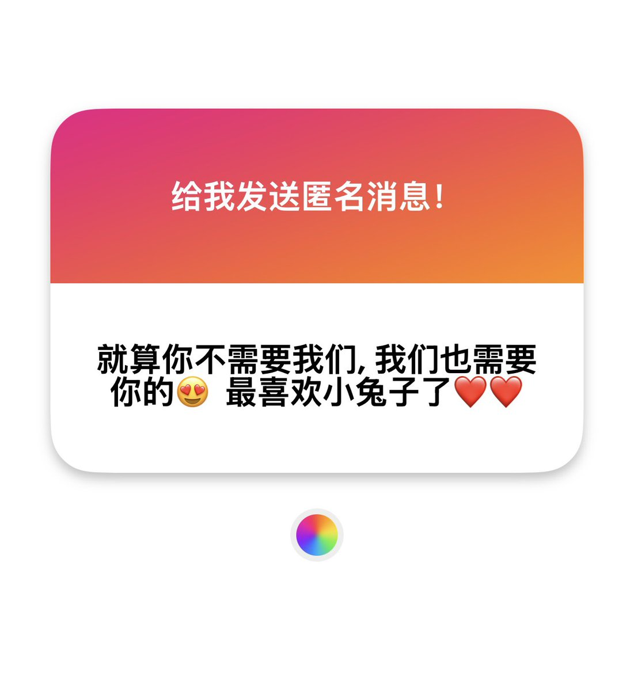

意之意
@lijunyi87429205
@4nVi2ge7Y 兔兔不用讨好所有人的www，按照自己的计划成为3m大师就好，肯定会获得支持的

S3raph_1m9v
@4nVi2ge7Y
你们需要我什么，我又不拍自己的裸照...也不会画色情漫画（...呃，为什么我第一时间想到的被人需要会是这种方面(´｀;)）
我真的觉得很不安哦，就是有的人讲他们喜欢我什么的。我会觉得那我一定要拿出什么东西去交换或者巩固喜欢才行啊。 https://t.co/OsbmvzTGlo